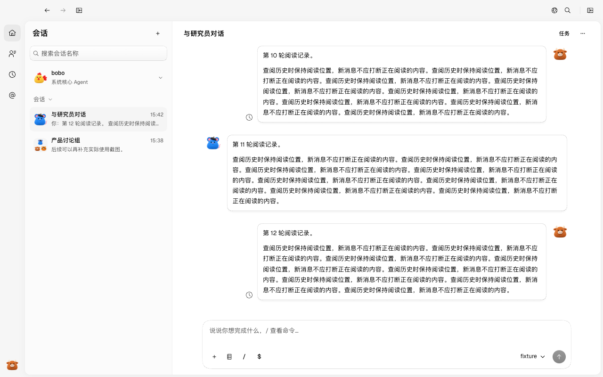
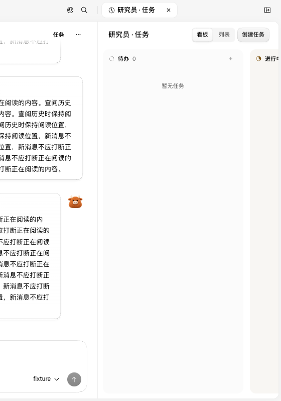
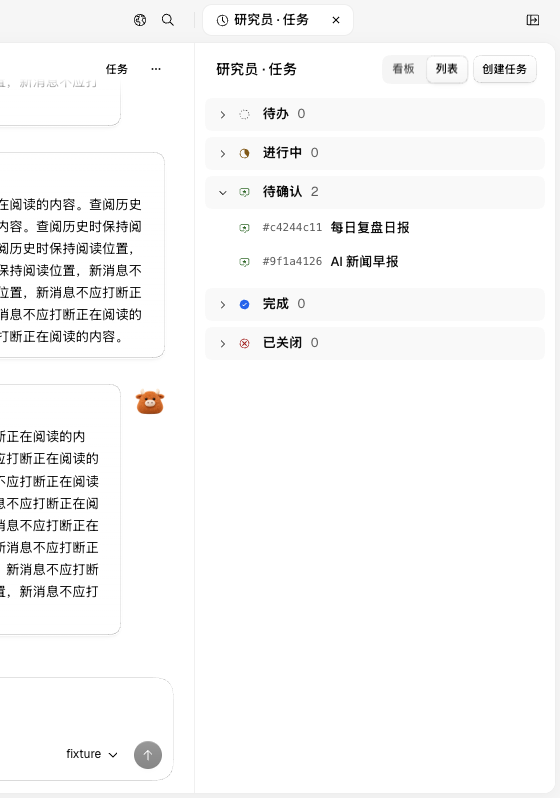
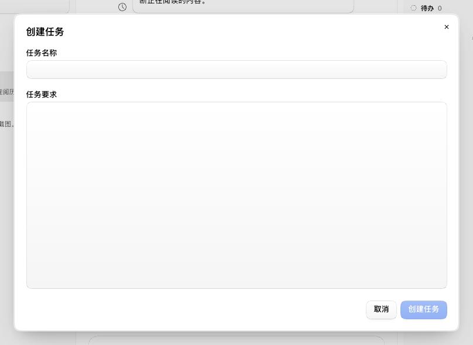
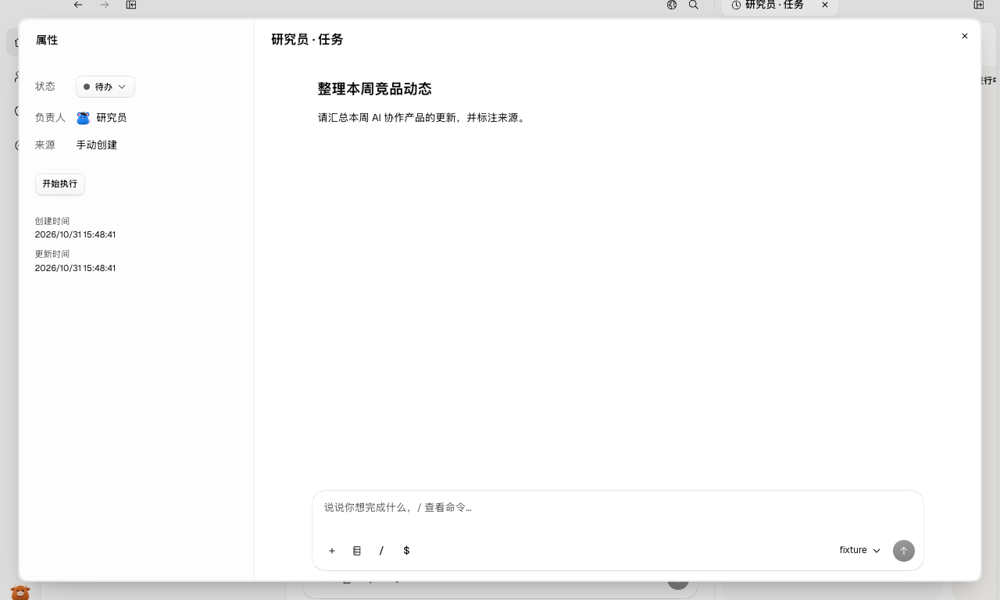
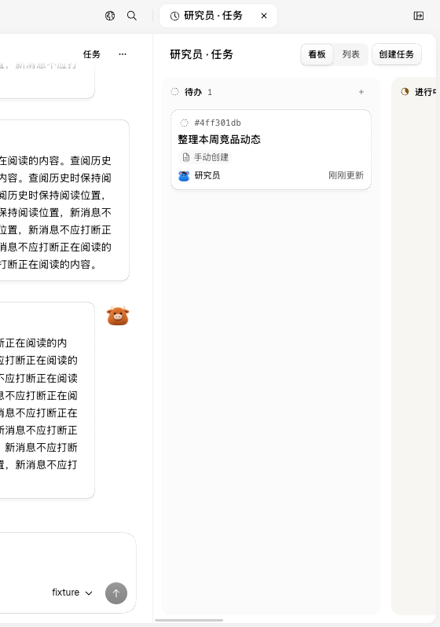
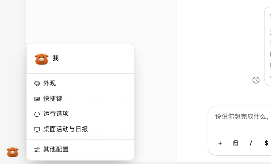

#80 界面预览
commit 67937be · 回到 PR · 该 PR 在员工直接会话右侧新增可切换看板/列表的任务面板，并加入创建任务、任务详情 Dialog（左属性右会话、可调分栏）、状态与拖拽排序等交互；同时替换了设置菜单的快捷项图标，并统一任务面板 header 与部分 Tabs 样式。
红线是鼠标走过的轨迹，红色圆环是一次点击；底部文字是这一步在做什么。空格暂停，← → 逐段查看。

打开员工任务看板与列表 · 直接会话头部，右侧可见任务入口

打开员工任务看板与列表 · 员工任务面板的看板视图

打开员工任务看板与列表 · 任务列表视图的状态分组

创建任务并查看任务详情 · 创建任务对话框

创建任务并查看任务详情 · 新建任务后的任务详情：左侧属性、右侧任务会话

创建任务并查看任务详情 · 关闭任务详情后回到任务看板

我的菜单设置图标 · 我的菜单中的设置快捷项图标